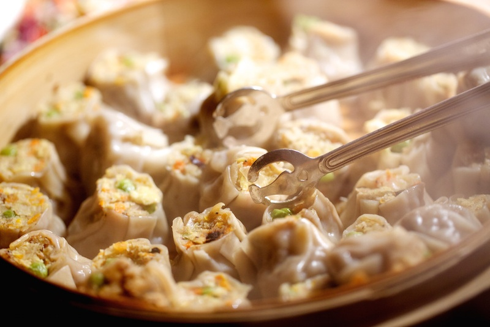
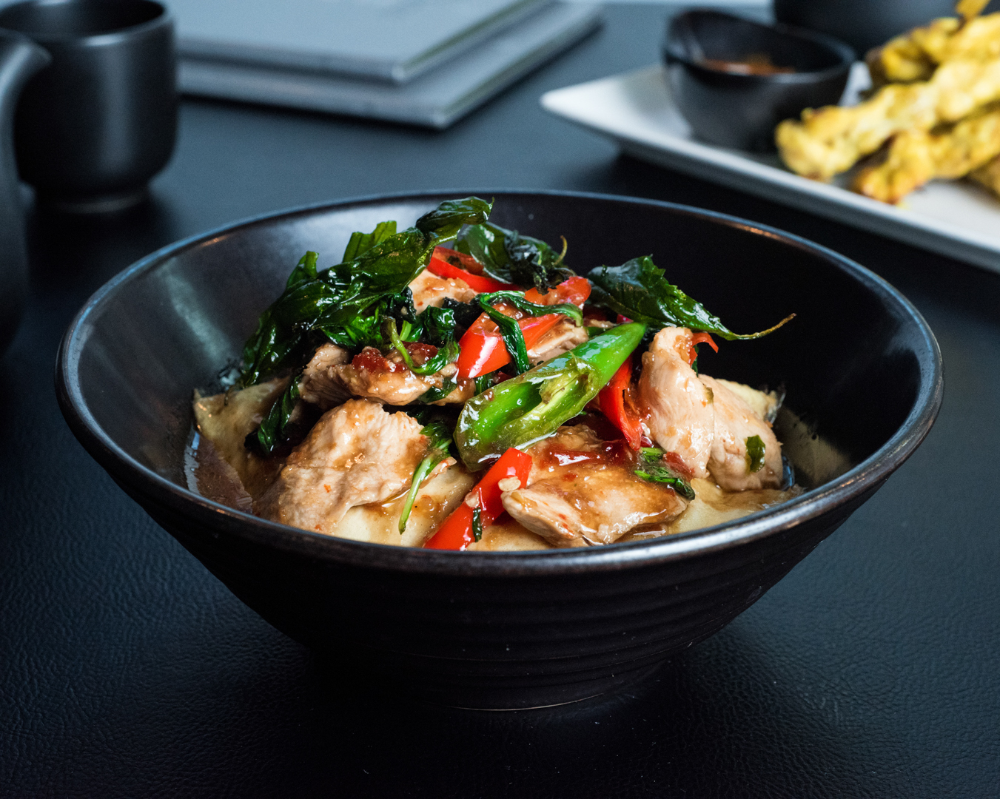
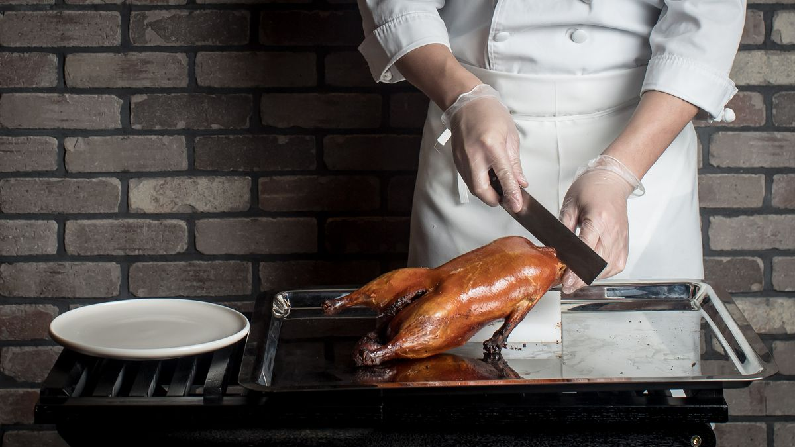
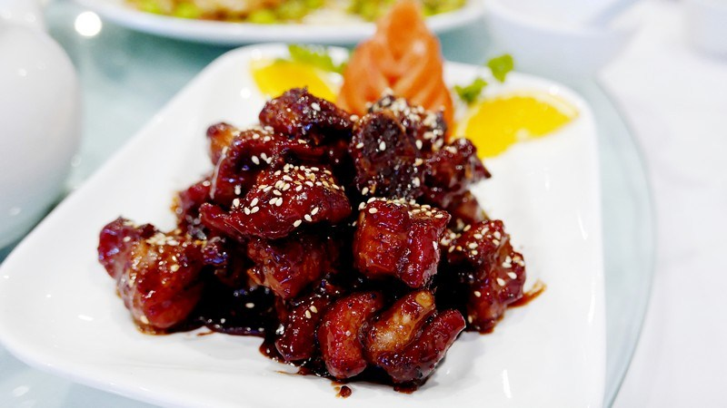

Chinese restaurants in the United States began during the California gold rush, which brought twenty to thirty thousand immigrants across from the Canton (Kwangtung or Guangdong) region of China.
The first documented Chinese restaurant opened in 1849 as the Canton Restaurant.
By 1850, there were five restaurants in San Francisco. Soon after, significant amounts of food were being imported from China to America's west coast.
The trend spread eastward with the growth of the American railways, particularly to New York City.
At the ratification of the Chinese Exclusion Act of 1882 there were only 14 restaurants in San Francisco.
However, the Chinese Exclusion Act allowed merchants to enter the country, and in 1915 restaurant owners became eligible for merchant visas.
This fueled the opening of Chinese restaurants as an immigration vehicle.[4] As of 2015, the United States had 46,700 Chinese restaurants.